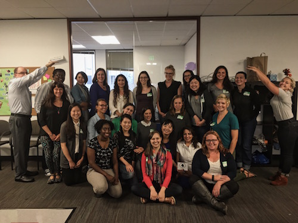
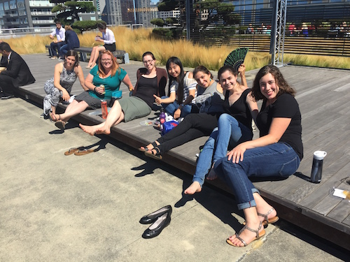

I just finished my third week at Ada Developer’s Academy. As I settle into my routine at Ada, I keep having the same thought – “So this is what it feels like to love what you do…”. This thought brings about scary, overwhelming, intoxicating, and unfamiliar feelings. I always thought I would live my life outside of my work, if that makes sense. I would do something I generally liked, but the bulk of my satisfaction and sense of accomplishment would need to come from my hobbies and relationships. I specifically chose my first career based on this understanding I had with myself – find balance above all else. Summers off, evenings and weekends free, and a flexible vacation schedule allowed me to more fully pursue things like reading, songwriting, yoga, friendships, exercise, and travel. I have loved that part of the past five years. I would never trade the time I have had to develop these interests and the summers filled with travel, family, friends, and new adventures.
I have loved watching my partner, Matthew, pursue his passion of playing piano and teaching as a career, although I will admit to experiencing some occasional jealousy over how easily he has been able to combine his work with his passion. At the same time, I’ve seen the downside of overwhelming, singular passion – it can be consuming and not leave much time for anything else. As I have longed for a more passionate endeavor to fill my work days, I’ve seen Matthew struggle to create balance and time for relationships and other interests outside of piano. I think this is one of the reasons we are so compatible – we encourage and inspire each other to continually grow and push ourselves beyond our very different comfort zones. I think balance is still in the forefront of my mind as a value, but I am learning that passion does not need to be sacrificed in order to find balance. Love and passion bring meaning to life in a way that balance cannot.
So, my first three weeks at Ada…in short, they have been incredible. I constantly feel intellectually and creatively stimulated, and I have learned SO MUCH. We have already moved into the “Intermediate Ruby” part of our curriculum, which boggles my mind because three weeks ago, I was a total beginner at the language. This week we created bank accounts with all sorts of features, and next week we are pair programming and making Scrabble games. This experience reminds me of my first year at Colorado College – only more intense, because instead of three hours a day of a single subject that rotates every four weeks, it is eight to ten hours a day of programming, week after week. In addition to the lectures about practical application, live coding exercises, and larger coding projects, we also have a 2-3 hour lecture and homework assignment each week about Computer Science fundamentals, and a 2-3 hour lecture each week from a counselor or other staff member that helps us dive into issues like implicit bias, inclusivity, and imposter syndrome – all issues that impact women in the tech field. They have had a speaker discuss financial empowerment, and another speaker review the importance of having a vision for your future. We will also get practice giving lightning talks (brief 5-minute talks that are really prevalent in the tech field).

I continue to be amazed by the level of support and encouragement at Ada – it unlike any other educational experience I have had. We are constantly reminded by instructors, speakers, and Adies in other cohorts that we are there because they saw something in us. It is easy to begin to doubt your skills or abilities when you are surrounded by 47 brilliant, strong, and driven women and the expectations for achievement and learning are so high. But they seem to know that, and they have pre-corrected for it in some very effective ways.
The instructors and directors are great about fostering a non-competitive environment. My cohort, Cohort 6, is the first to have 48 people instead of 24, and we are separated into two groups – the brackets and parens. I am a paren. The parens have two instructors, and some days we also have Teaching Assistants (volunteers – prior Adies or other people in the tech field) come into the class to help. Our instructors give us regular, written feedback and we have one-on-one meetings with them every two to three weeks. In addition to the support from our instructors, we are encouraged to meet regularly with the counselor that is on staff to problem-solve personal or interpersonal issues. We also have six hours of scheduled optional tutoring each week. On top of all of that, every new student is assigned an Adie mentor from a previous cohort, with the expectation that we meet with them or talk to them regularly. Those of us that are not tech-adjacent (which means that we don’t have a close friend or family member in the tech field) are also assigned an industry mentor, so that we can ask them about issues specific to the tech industry and begin to develop our network.
Ada Developer’s Academy also has a strong interest in continual improvement. In the first three weeks, I have already taken a survey about the effectiveness of the instructors, and how I am feeling with the pace of instruction. I am not positive about this, but I have a feeling they are going to take our feedback to the instructors so they can make changes as needed before we get too far into the program. Finally, each week we are encouraged to write post-it notes about things we want more or less of and challenges or positive experiences we had in the last week. Then in the final thirty minutes of class on Friday, we talk through the post-its and have discussion as needed. They call it a “retrospective”, and I think everyone should do it! I will be honest – I had pretty high expectations after reading the blogs of Adies that came before me. But even these were blown out of the water. I feel unbelievably lucky to have this opportunity.

There has been some time for fun and exploration too. During our first week, we went on a fun downtown Seattle scavenger hunt with teams of 2-3 other students. My team called ourselves the “Merdogs” – I’m honestly still not quite sure what that means, but we had a great time taking photos of ourselves with things like “a fish being thrown at Pike’s Place Market” and “as many pigs as you can find”. We also have played games like “Two Truths and a Lie”, “BINGO”, and “Speed Dating” as ways to get to know each other better.
In terms of challenges, I need to get out socially a bit more – I knew this would be a struggle because I live with my sister-in-law, who also happens to be one of my closest friends. It is always easier to stay at home or hang out with a familiar person than to go out with new friends. I’m going to make more of an effort to do this over the next few weeks. I also want to keep bouldering at the Seattle Bouldering Project – what a fun way to exercise! Other than the social piece, I’ve been able to keep a pretty balanced life so far – I’ve read a book each week, gone running 2-3 times a week, watched the first season of a TV series, and have been able to cook and eat most of my meals at home. This all feels really good. I’ve also made it to a couple of the beautiful Seattle-area beaches. I’m hoping the weather holds up for a few more weeks so I can do more of this type of exploration! We’ll see if I can keep this balance as the expectations continue to ramp up over the course of the year. I’m going to try to blog every few weeks.
Resources:
Harvard: Project Implicit Go here to learn about implicit bias and take an assessment to evaluate your level of implicit bias towards various groups
What do the fields of software development and school psychology have in common?
I have thought a lot about why I want to be a software developer over the past six months, partially because the application and interview process at Ada necessitated that I do this, but also because I wanted to be very thoughtful about taking this step toward a new career. Since I announced that I will be changing careers and starting at Ada in August, friends, family and coworkers have been unbelievably supportive and excited for me, and in their curiosity about my new path, they have asked me questions like, “Why software development?” or “Does school psychology relate in any way to what you will be doing next?”. These questions and others have led to me realize that the general public doesn’t really know much about software development and what it is, let alone how it might compare to my current career. There are surprisingly many parallels between school psychology/education and software development/technology, from the way problems are approached and solved to the way that collaboration is encouraged. There are also some key differences that I want to talk about, that might illuminate further why I made this career change – I decided to cover these in a future post.
As a school psychologist, one of the basic tenets of my practice is the use of a problem-solving model. This is basically day one of grad school (and almost every day after that…) and it has been the foundation of my work in this field – whether is with students, teachers or bigger multi-tiered systems of support like Response to Intervention or Positive Behavioral Interventions and Supports. It has also filtered into my daily life through goal-setting and evaluation, Bullet Journaling, and habit tracking (check out my CHERPAS system). It has basically been my whole life for the past 8 years. Here is a technical definition that I think explains it pretty well – the problem-solving model is a data-driven feedback loop that uses a systematic approach to assist in making decisions about the quality and effectiveness of interventions for children who are struggling in school. Although the exact nature of the model varies according to the practitioner’s orientation and values, there are four basic questions that serve to guide us: “What is the problem?”, “Why is the problem occurring?”, “What should be done about it?” and finally, “Did it work?” So far, this is so very similar to writing code. To complete my program for the Phase 3 application process for Ada, I found I followed a process of researching and learning, trying a piece of code, testing it, and then making refinements until I got close to what I wanted to accomplish. Then I did this over and over again for every small “problem” I encountered when writing my program. I love this way of approaching problems at home and at work, which is probably why I have so quickly become enamored with programming.
Second, from everything I have seen so far, the tech world strongly favors collaboration. Through my work as a school psychologist, the primary part of my job is collaboration with others – with teams, teacher, administrators, families. I do this through all kinds of team meetings, trainings, collaboration sessions, and consultative relationships. My meetings often involve sensitive, highly charged topics like making a child eligible for a disability category or figuring out how to make a plan work for a family and school when everyone has limited resources. Through this experience, I have learned that so much can be gained through collaboration and sharing of ideas with others, and also that it can sometimes be really difficult, exhausting work. I’ve also learned that listening and really hearing someone else is the core to any sort of meaningful collaboration. I love the fact that I will be able to continue to collaborate with others in meaningful ways about important problems as I transition into the tech field. Pair programming, or writing code collaboratively with others, is a huge part of many jobs in the tech field, and since this is a field that never stops changing and growing, staying updated requires getting constant feedback and information from others. This ongoing learning takes the form of in-person meet-ups, conferences, and online information-sharing (GitHub and StackOverflow), to name a few. The problems that the field of technology is solving are complex, and there no way they can be figured out by people working in isolation.
I’ve been interested in human behavior and have been curious about why people behave the way they do for as long as I can remember. That is why I initially pursued the field of psychology. Both my undergraduate and graduate programs heavily favored Applied Behavior Analysis (ABA) as a way of viewing the world and those operating within it. In my work (and in my life as a dog owner, partner, friend…), I have seen the power of this and have generally adopted it as the way I view the world. ABA is a learning theory that has demonstrated that we can change behavior by assessing the functional relationship between a behavior and its environment. For example, I am more likely to eat at home if I prep all of my food for the week. However, even if I prep all my food, if a friend asks me to go out with them, I am pretty likely to say “yes!”. Then this behavior of doing out is reinforced by the social stimulation and the delicious food I am eating, so I am more likely to do it again in the future. This is such a cool concept, and it permeates every area of our lives. Once you start to see the ways in which you and others around you are triggered or reinforced by certain environmental stimuli, your whole world opens up. I love this stuff, so I am getting a little off-track here…back to the similarities! One of the most basic concepts in Computer Science is algorithmic thinking. An algorithm is basically a step-by-step process that solves a problem. Since computers need everything to be very explicit, algorithms are very specific and detailed. One of our early practice assignments for understanding an algorithm required us to write out every single step it would take to make a peanut butter and jelly sandwich, so a robot could do it if they picked up the directions. I actually did something really similar in one of my ABA classes as a way to understand the importance of behavioral chaining, which is, guess what…pretty much the exact same thing as creating an algorithm! Specifically, it is a way to teach someone all of the individual behaviors that are a part of a complex behavior. The only difference is that after carefully designing each step required to solve a problem or engage in a behavior, the person teaching the behavior reinforces the individual responses. This may seem like a minor similarity, but again, these foundations were the basis of my work as a school psychologist, and it appears they also will be in computer science.
I hope this illuminated some of the similarities between school psychology and software development. In my next blog post, I am going to talk about some of the key differences, based on what I know thus far!
Ada Acceptance and Moving to Seattle
Ada Developer’s Academy emailed me to let me know I have been accepted into their sixth cohort!!! When I found out, I was on my lunch break at a pizza place in Springfield. I had been obsessively checking my email for almost a week, so my phone wasn’t far from me when I heard the soft ding that signaled I received an email. I took a look and saw that it was “the one”. Pausing for a moment before opening it, I readied myself for acceptance or rejection. When I saw the first words – “It is our great pleasure to congratulate you…” – I stopped reading and sat back in my chair, stunned.
I momentarily pushed away a tumult of thoughts and emotions to call my sister-in-law and future roommate, Jessica. Tears began streaming down my face as I told her the news, and I realized that I hadn’t allowed myself to believe that acceptance was even in the realm of possibility. It hit me all at once – my whole life was about to change – at least for a year, but possibly forever. After telling Jessica, I called my partner, Matthew, to let him know. Then as I let the news sink in, it surprised me to realize that I would miss certain things about my job. That I would miss my friends and my old life. And that it is crazy that I am about to change everything at 31 years old, after 10 years of pursuing school psychology and only a year after buying a house.
But in spite of all that, I also had this incredible realization that I am doing exactly the right thing for me. I’ve thought a lot over the past year about taking risks, being a lifelong learner, and what I want the next 10, 20, or even 30 years of my life to look like. I want it to be a life full of friendships and family and a certain measure of security, but also one of professional fulfillment. I have had and continue to have serious doubts over whether I will be able to find that sense of long-lasting fulfillment in my current field. A friend that has taken a lot of professional risks over the past couple of years, to great success and improved happiness, gave me a “congratulations” card that said the following:
“Only those who will risk going too far can possibly find out how far one can go”. – T.S. Eliot
I have never thought of myself as this brave or daring person, or as someone who takes a lot of risks. If anything, I have “played it safe” at certain key junctures of my life, afraid of social or professional repercussions. I have felt this fear grow as my stability has increased over the past five years. But at the same time, my yearning for a different, more informed version of my life has grown. By more informed, I guess I mean…more informed by my knowledge of what being an adult is really like. When we make choices about college majors and careers, we have zero idea about the daily slog of adult life. Now that I have a clearer picture of this, I am happy to say that I love many of the choices I have made – my partner, my dogs, my daily routine, my house, my friendships, and many other little things. But one area where I missed the mark is my career. As I step forward into this next phase of my life, I am recognizing more and more that this is okay, because while I don’t plan to remain a school psychologist, I can still take so much of what I have learned in the past 10 years with me into this next stage. I think the timing is right too. I am at a point where I truly feel as though I am just moving on to a new opportunity, not giving up because of stress or burnout. This would not have been the case three years ago.
In the time since I learned I was accepted, my sister-in-law Jessica already found us an apartment in Seattle and we are signed up and ready to go. I actually helped her move into the place, and wow, does it have an amazing view!! I start the program on August 8th. I plan to keep this blog up to date when I start the program, more to document my experience than anything else. Feel free to follow along with my adventures in learning to code here.